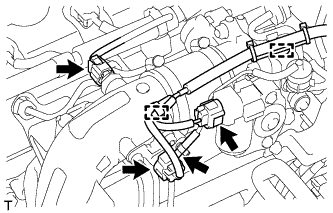
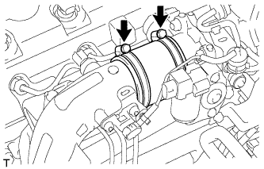
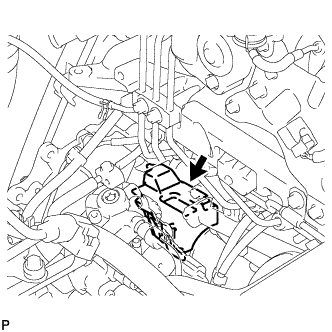
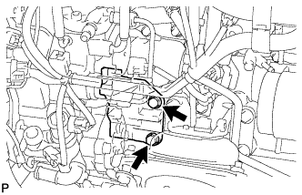
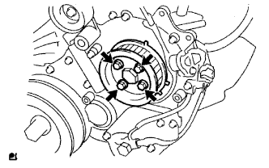
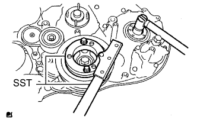

НАГНЕТАЮЩИЙ ТОПЛИВНЫЙ НАСОС (для моделей без DPF) > СНЯТИЕ |
| 1. ОТСОЕДИНИТЕ ПРОВОД ОТ ОТРИЦАТЕЛЬНОГО ВЫВОДА АККУМУЛЯТОРНОЙ БАТАРЕИ |
| 2. СНИМИТЕ ПРИВОДНОЙ РЕМЕНЬ ГАЗОРАСПРЕДЕЛЕНИЯ |
Снимите приводной ремень газораспределения (Нажмите здесь).
| 3. СНИМИТЕ ЭЛЕКТРОННЫЙ БЛОК ПРИВОДА ФОРСУНОК |
Отсоедините 3 разъема.
Выверните 3 болта и снимите электронный блок привода форсунок в сборе.
| 4. ОТСОЕДИНИТЕ МАСЛЯНЫЙ БАЧОК ЛОПАСТНОГО НАСОСА В СБОРЕ |
Выверните 3 болта и отсоедините масляный бачок лопастного насоса.
| 5. ОТСОЕДИНИТЕ ПАТРУБОК ОХЛАЖДАЮЩЕЙ ЖИДКОСТИ ПОДОГРЕВАТЕЛЯ В СБОРЕ |
 |
Выверните болт и отсоедините входной патрубок отопителя.
| 6. ОТСОЕДИНИТЕ ВАКУУМНУЮ ТРУБКУ № 4 В СБОРЕ |
 |
Выверните болт и отсоедините вакуумную трубку № 4.
| 7. СНИМИТЕ ВПУСКНОЙ ПАТРУБОК № 1 |
|  |
Отсоедините 3 разъема от датчика температуры воздуха на впуске, электродвигателя привода дроссельной заслонки и датчика абсолютного давления в коллекторе.
Снимите 2 зажима.
Отсоедините вакуумный шланг от датчика абсолютного давления в коллекторе.
|  |
Ослабьте 2 зажима шланга и снимите воздушный шланг № 1.
 |
Ослабьте зажим воздушного шланга промежуточного охладителя.
 |
Выверните 2 болта и снимите впускной патрубок № 1.
| 8. СНИМИТЕ ТРУБКУ ПОДВОДА ТОПЛИВА |
 |
Выверните болт и снимите зажим.
 |
С помощью разрезной головки на 17 мм ослабьте гайки штуцеров и снимите трубку подвода топлива.
| *a | Со стороны топливной системы Common Rail |
| *b | Сторона нагнетающего топливного насоса |
| 9. СНИМИТЕ ИЗОЛЯТОР НАГНЕТАЮЩЕГО ТОПЛИВНОГО НАСОСА |
|  |
| 10. СНИМИТЕ ЭЛЕМЕНТ ЗАЩИТЫ НАГНЕТАЮЩЕГО ТОПЛИВНОГО НАСОСА № 1 |
|  |
Выверните 2 болта и снимите элемент защиты нагнетающего топливного насоса № 1.
| 11. СНИМИТЕ ТОПЛИВНЫЙ НАСОС В СБОРЕ |
 |
Отсоедините 2 шланга подачи топлива.
Отсоедините разъем датчика температуры топлива и разъем клапана регулирования всасывания.
|  |
Выверните 4 болта, указанные стрелками на рисунке.
Снимите фланец зубчатого колеса распредвала № 2 и шкив приводного вала насоса.
|  |
Отверните установочную гайку и снимите кольцевое уплотнение, удерживая шкив коленчатого вала с помощью SST.
 |
Ослабьте 2 гайки.
 |
С помощью SST отсоедините нагнетающий топливный насос от шестерни нагнетающего насоса.
Отверните 2 гайки и снимите нагнетающий топливный насос.
Снимите кольцевое уплотнение.